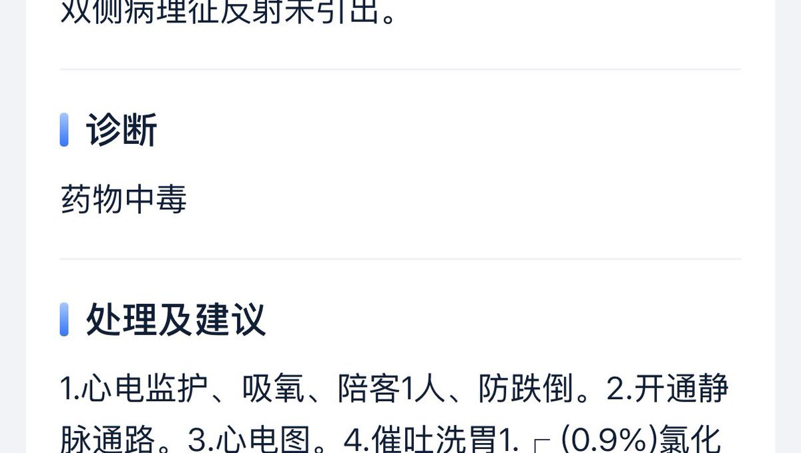

みかんミックス🍥
@mikanmkx
@Kuriyona 抱抱你。。。

Kuriyona 🏳️⚧️
@Kuriyona
我不知道呢，我是因为自己心底里还是不想死还是说说只是因为在那时身上只带了些没啥伤害性的药...
为什么不在旁边跳河呢？为什么被人劝说了好久还是去医院了呢...
我不知道，好难受，但是还是会想着真的有好多很会在意我的人吧...我至今周围遇到的都是好人
可能还是会有这个世界有所留念吧
事发 9/15 https://t.co/T7Wl5P14hu